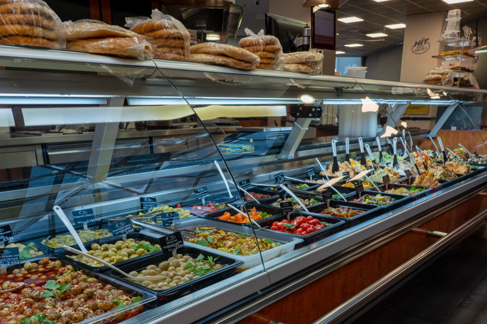

Handverlesene mediterrane Köstlichkeiten, frisch zubereitet und liebevoll präsentiert.

Täglich frisch zubereitet — wählen Sie aus unserem vielfältigen Angebot
Unsere beliebten Klassiker vom Drehspieß
Frisches Fladenbrot gefüllt mit saftigem Drehspießfleisch, knackigem Salat und hausgemachter Sauce.
Extra große Portion mit Drehspießfleisch, frischem Salat und Sauce — für den großen Hunger.
Dünnes Fladenbrot gerollt mit Drehspießfleisch, Salat und Sauce — optional mit Weichkäse.
Drehspießfleisch serviert mit frischem Salat und Sauce — optional mit Pommes oder Reis.
Knusprige Pommes mit Drehspießfleisch und leckerer Sauce — perfekt für unterwegs.
Türkische Pizza — dünn und knusprig. Einfach, mit Salat, mit Weichkäse oder mit Drehspieß.
Vegetarische Köstlichkeiten — knusprig und aromatisch
Knusprige Falafel im Fladenbrot mit frischem Salat und cremiger Sauce.
Gerolltes Fladenbrot mit Falafel, Salat und Sauce — optional mit Weichkäse.
Hausgemachte Falafel mit Salat, Pommes und Sauce — vegetarischer Genuss.
Frisches Fladenbrot gefüllt mit buntem Salat und Sauce — leicht und lecker.
Gerolltes Fladenbrot mit frischem Salat und Sauce — die vegetarische Alternative.
Täglich wechselnde Auswahl — frisch zubereitet
Täglich wechselndes Gericht mit einer Beilage Ihrer Wahl — fragen Sie nach dem heutigen Angebot.
Vegetarisches Tagesgericht — täglich frisch zubereitet.
Täglich wechselndes Nudelgericht — hausgemacht und lecker.
Eine Auswahl unserer besten Spezialitäten auf einem Teller — perfekt zum Probieren.
Frisches Fischgericht — nur freitags erhältlich.
Hausgemachtes Gebäck und frische Salate
Traditionelle türkische Nudelteigspezialität — zart und saftig.
Gerollter Blätterteig mit Schafskäse — klein oder groß erhältlich.
Knusprige Röllchen aus feinem Blätterteig — der perfekte Snack.
Knusprig gebratene Reibekuchen mit Gemüse — einzeln oder im Set.
Frischer Salat mit Thunfisch, Käse oder Drehspießfleisch — leicht und sättigend.
Wählen Sie 4 verschiedene Salate aus unserer Theke — Vielfalt nach Ihrem Geschmack.
Kleine Leckereien für zwischendurch
Knusprige Chicken Nuggets — als 6er oder 9er Box erhältlich.
Hausgemachte Falafel — als 6er oder 9er Box, auch einzeln erhältlich.
Knusprige Pommes frites — klein oder groß, mit Ketchup oder Mayo.
Cremige Dips und Aufstriche nach traditionellen Rezepten
Cremiger Kichererbsen-Dip mit Tahini, Zitrone und feinem Olivenöl. Ein Klassiker der orientalischen Küche.
Würzige Walnuss-Paprika-Paste nach türkischer Art. Perfekt als Brotaufstrich oder Dip.
Syrische Paprika-Walnuss-Creme mit Granatapfelsirup. Süß-würzig und unwiderstehlich.
Rauchige Auberginen-Creme mit Tahini, Knoblauch und frischer Petersilie. Ein Muss für Auberginen-Liebhaber.
Griechischer Joghurt-Dip mit Gurke, Knoblauch und frischem Dill. Erfrischend und cremig.
Unsere Hauskreation mit geheimen Gewürzen. Eine einzigartige Mischung, die Sie nur bei uns finden.
Handverlesene Oliven in verschiedenen Variationen
Griechische Kalamata-Oliven, mariniert in nativem Olivenöl mit Kräutern der Provence.
Grüne Oliven gefüllt mit Mandeln, Paprika oder Knoblauch. Ein mediterraner Genuss.
Knackige grüne Oliven in milder Salzlake. Der pure Olivengeschmack für Puristen.
Vollreife schwarze Oliven, sonnengetrocknet und in Olivenöl eingelegt. Intensiv aromatisch.
Mariniertes Gemüse und mediterrane Vorspeisen
Über Holzkohle gegrillte Paprika, mariniert in Knoblauchöl mit frischen Kräutern.
Zarte Weinblätter gefüllt mit gewürztem Reis, Pinienkernen und frischen Kräutern.
Sonnengetrocknete Tomaten in Olivenöl mit Basilikum und Knoblauch. Intensiv und aromatisch.
Zarte Artischockenherzen in Zitronen-Kräuter-Marinade. Eine italienische Delikatesse.
Saftige Riesengarnelen in mediterraner Knoblauchmarinade mit Chili und frischer Petersilie.
Gegrillte Zucchini-Scheiben mariniert mit Minze, Knoblauch und Balsamico.
Knackige Salate nach mediterraner Art
Knackiger Salat mit frischem Gemüse der Saison, Kräutern und hausgemachtem Dressing.
Klassischer libanesischer Petersiliensalat mit Bulgur, Tomaten, Minze und Zitronendressing.
Fluffiger Couscous mit Paprika, Zucchini, Rosinen und orientalischen Gewürzen.
Türkischer Krautsalat mit Karotten und einer leichten Essig-Öl-Marinade. Knackig und erfrischend.
Frisch gebackene Spezialitäten aus dem Ofen
Traditioneller türkischer Sesamring, knusprig gebacken. Perfekt zum Frühstück oder als Snack.
Blätterteigröllchen gefüllt mit Feta und frischen Kräutern. Knusprig und herzhaft.
Knuspriger Yufka-Teig gefüllt mit würzigem Spinat und Zwiebeln. Ein vegetarischer Klassiker.
Herzhaftes Blätterteiggebäck gefüllt mit gewürztem Rinderhackfleisch und Zwiebeln.
Hinweis: Alle Produkte werden täglich frisch zubereitet. Preise nach Gewicht an der Theke. Informationen zu Allergenen erhalten Sie auf Anfrage bei unseren Mitarbeitern.
Lassen Sie sich von unserer Vielfalt inspirieren und probieren Sie unsere Spezialitäten.
Standorte finden